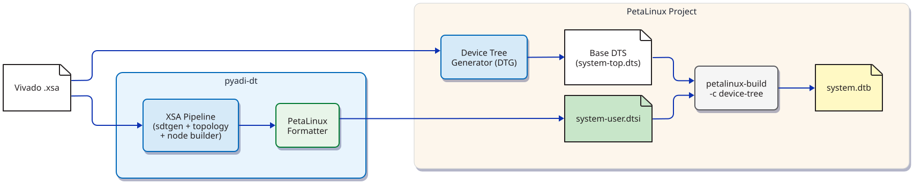
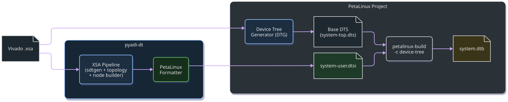
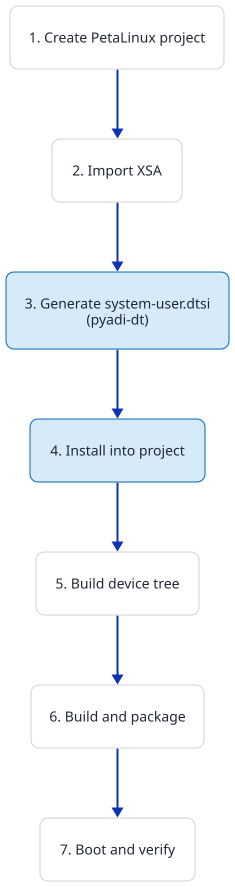
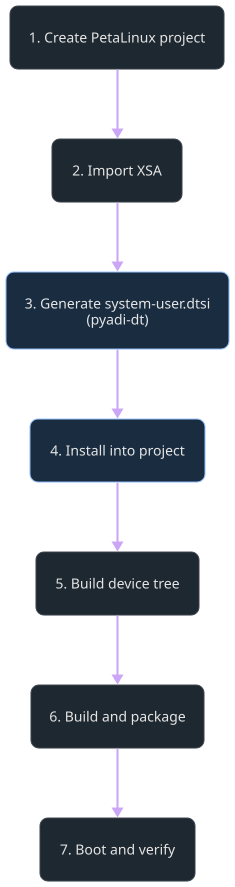

PetaLinux Integration
pyadi-dt generates PetaLinux-ready system-user.dtsi files from
Vivado XSA archives, eliminating the need to hand-write ADI device tree
nodes for clock chips, JESD204 links, and high-speed converters.
Overview
PetaLinux uses Xilinx Device Tree Generator (DTG) to produce a base
device tree from the XSA hardware description. Board-specific
customizations go in system-user.dtsi, which is #included by
the auto-generated system-top.dts.
pyadi-dt bridges the gap between the XSA hardware description and the
ADI Linux driver requirements by generating the correct SPI nodes,
clock phandle wiring, JESD204 framer/deframer configuration, and FPGA
transceiver settings — all formatted as a drop-in system-user.dtsi.
{kind=link}

{kind=link}

What the formatter does
The PetalinuxFormatter transforms the XSA pipeline’s overlay output
into PetaLinux-compatible format:
Strips overlay directives — removes
/dts-v1/;and/plugin/;(PetaLinux’s build system handles DTS compilation)Adds system-conf include — prepends
#include "system-conf.dtsi"for PetaLinux 2020.1+Rewrites bus labels — changes
&ambato&amba_plon ZynqMP platforms to match PetaLinux DTG conventionsGenerates bbappend — creates a minimal
device-tree.bbappendthat adds the files directory to the recipe search path
Quick start
Generate and install in one command
adidtc xsa2dt \
-x /path/to/design.xsa \
-c config.json \
--format petalinux \
--petalinux-project /path/to/myproject
This runs the full XSA pipeline, generates system-user.dtsi, and
copies it (along with device-tree.bbappend) into the PetaLinux
project. Any existing system-user.dtsi is backed up to
system-user.dtsi.bak.
Generate without installing
adidtc xsa2dt \
-x design.xsa \
-c config.json \
--format petalinux \
-o /tmp/dt_output
ls /tmp/dt_output/system-user.dtsi /tmp/dt_output/device-tree.bbappend
Then copy the files manually into your PetaLinux project.
Step-by-step workflow
The diagram below shows the complete workflow from Vivado design to a booted board:
{kind=link}

{kind=link}

Step 1: Create a PetaLinux project
petalinux-create --type project --template zynqMP --name myproject
cd myproject
Use --template zynq for Zynq-7000 boards (ZC706, etc.).
Step 2: Import the hardware description
petalinux-config --get-hw-description=/path/to/xsa_directory --silentconfig
This imports the XSA and generates the base device tree via DTG.
Step 3: Generate system-user.dtsi
Prepare a configuration file with JESD parameters. These typically
come from the pyadi-jif clock solver:
{
"jesd": {
"rx": {"F": 1, "K": 32, "M": 2, "L": 4, "Np": 16, "S": 1},
"tx": {"F": 1, "K": 32, "M": 2, "L": 4, "Np": 16, "S": 1}
}
}
Run pyadi-dt:
adidtc xsa2dt \
-x /path/to/design.xsa \
-c config.json \
--format petalinux \
-o /tmp/dt_output
Step 4: Install into the project
cp /tmp/dt_output/system-user.dtsi \
project-spec/meta-user/recipes-bsp/device-tree/files/
cp /tmp/dt_output/device-tree.bbappend \
project-spec/meta-user/recipes-bsp/device-tree/
Or let pyadi-dt do it automatically with --petalinux-project:
adidtc xsa2dt -x design.xsa -c config.json \
--format petalinux --petalinux-project .
The project directory structure after installation:
myproject/
└── project-spec/
└── meta-user/
└── recipes-bsp/
└── device-tree/
├── device-tree.bbappend
└── files/
└── system-user.dtsi
Step 5: Build the device tree
petalinux-build -c device-tree
This compiles the base DTS with your system-user.dtsi overlay into
a DTB. It is much faster than a full build.
Step 6: Full build and package
petalinux-build
petalinux-package --boot --fsbl images/linux/zynqmp_fsbl.elf \
--fpga images/linux/system.bit --u-boot --force
Step 7: Boot and verify
Deploy BOOT.BIN and image.ub to the SD card, boot the board,
and verify IIO devices:
# On the target
cat /sys/bus/iio/devices/iio:device*/name
Python API
Use the pipeline directly from Python:
from pathlib import Path
from adidt.xsa.pipeline import XsaPipeline
results = XsaPipeline().run(
xsa_path=Path("design.xsa"),
cfg={"jesd": {"rx": {"L": 4, "M": 2}, "tx": {"L": 4, "M": 2}}},
output_dir=Path("out/"),
output_format="petalinux",
)
print(results["system_user_dtsi"]) # out/system-user.dtsi
print(results["bbappend"]) # out/device-tree.bbappend
print(results["merged"]) # out/<name>.dts (full merged DTS)
print(results["overlay"]) # out/<name>.dtso (overlay)
Use the formatter standalone:
from adidt.xsa.petalinux import PetalinuxFormatter
overlay_dts = Path("overlay.dtso").read_text()
dtsi = PetalinuxFormatter().format_system_user_dtsi(
overlay_dts,
platform="zcu102", # rewrites &amba → &amba_pl
petalinux_version="2024.1", # includes system-conf.dtsi
)
Path("system-user.dtsi").write_text(dtsi)
Platform notes
ZynqMP (ZCU102, ZCU104, ZU11EG)
PetaLinux DTG generates the PL bus node as
amba_pl. The formatter automatically rewrites&ambareferences to&amba_pl.GPIO controller label is
gpio.PS clock reference:
zynqmp_clk 71.
Zynq-7000 (ZC706)
PetaLinux DTG uses
ambaas the PL bus label (no rewrite needed).GPIO controller label is
gpio0.PS clock reference:
clkc 15.pyadi-dt normalizes the root
compatiblefromxlnx,zc7xxtoxlnx,zynq-7000to match the kernel machine descriptor.
PetaLinux version compatibility
2020.1+ —
system-user.dtsimust#include "system-conf.dtsi". This is the default behavior.Pre-2020.1 — No system-conf include. Pass
petalinux_version="2019.2"to the formatter or omit the include manually.
Troubleshooting
petalinux-build -c device-tree fails with phandle errors
The generated system-user.dtsi references labels defined in the
base DTS. If labels don’t match, ensure:
The XSA file matches the PetaLinux project (same Vivado design).
You ran
petalinux-config --get-hw-descriptionwith the correct XSA before building.
Board doesn’t boot after applying system-user.dtsi
Check
dmesgfor driver probe failures.Verify the JESD parameters in
config.jsonmatch the HDL design.Run
adidtc xsa2dt --lintto check for structural DTS issues before installing.Compare with the reference DTS from the ADI Kuiper release using
--reference-dts.
GPIO label mismatch
If you see Reference to non-existent node or label "gpio" during
DTB compilation, the profile may have the wrong GPIO controller label
for your platform. Zynq-7000 uses gpio0, ZynqMP uses gpio.
Override in the config JSON:
{
"fmcdaq3_board": {
"gpio_controller": "gpio0"
}
}